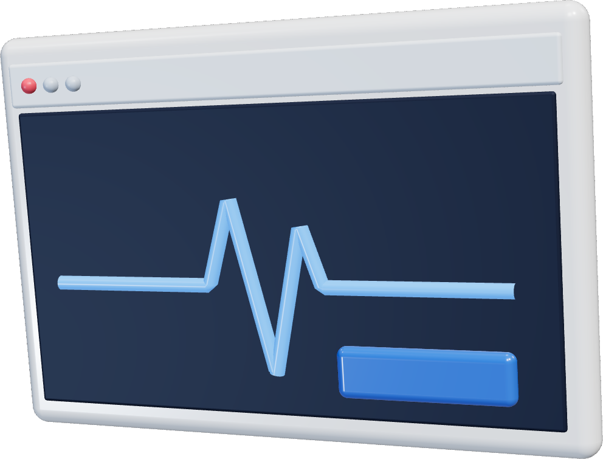
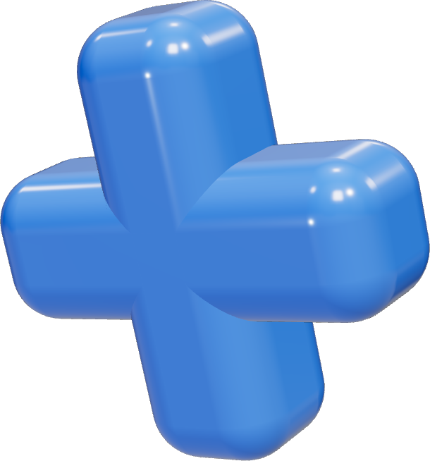

web
clinic
webclinic
@webclinic
O primeiro atendimento
agora é no site.


Consulta marcada
pelo site · 23h47
Seu paciente pesquisa antes de ligar.
Seu site precisa atender por você.
WEBCLINIC · SITES PARA MÉDICOS E CLÍNICAS